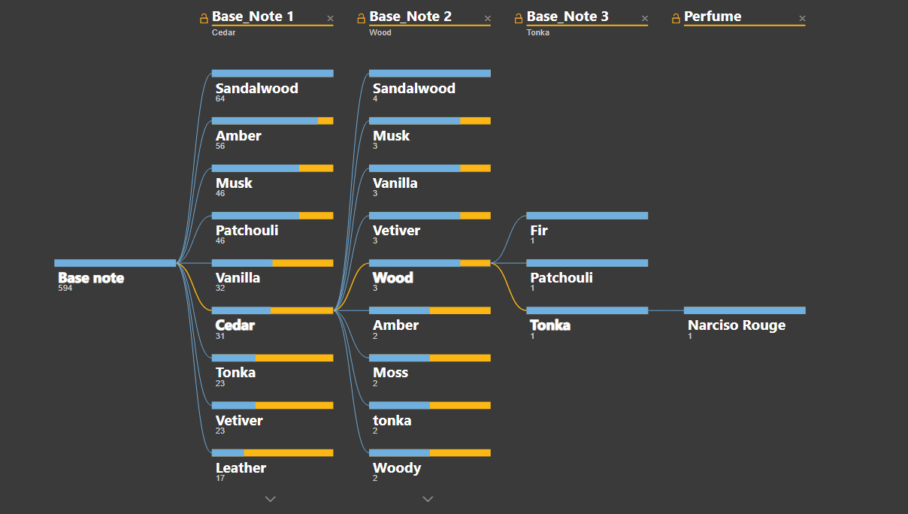
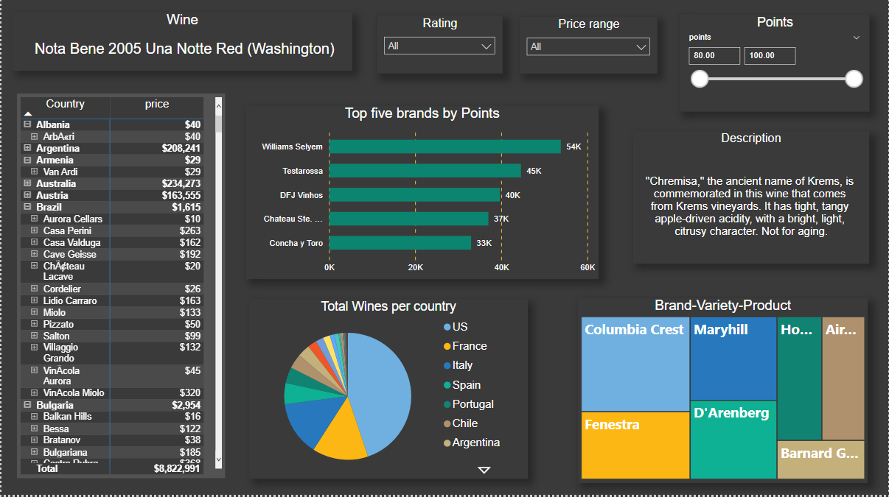
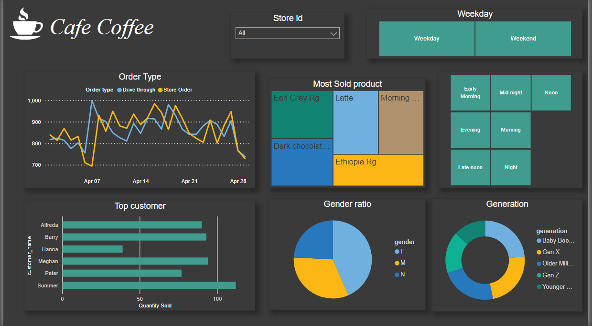
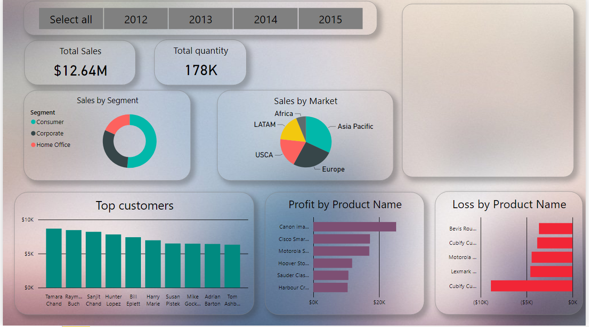
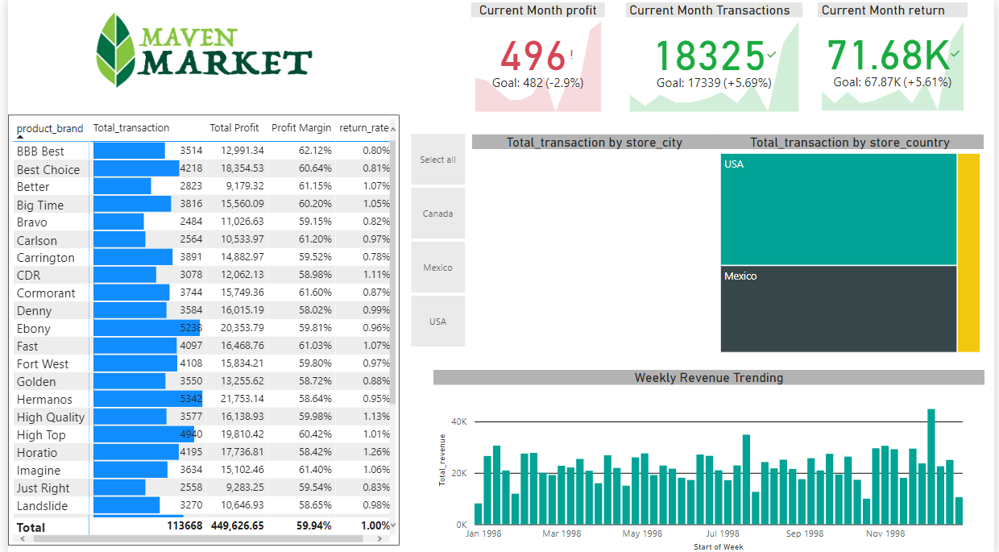
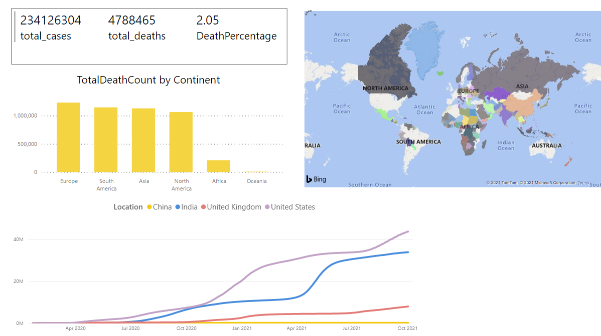

This dashboard is performed on the data set of one the the largest UAE Ecommerce companies 'NOON',
this dashboard is centred mainly around clients who want to see which product sells the best and which retailer has a larger collection.
A special customized Dcomposition tree is created by me, where one can spend hours playing with the modal and select the best perfume based on their liking.


This dash board revolves aound different types of wine arround the country. This visualization is more appropriate for a customer or a client when they an view and filter wine by their criteria and also see the best
value proposition wine.

Data exploration and analysis done on Walmart data performed in R studio.
Data cleaning and analysis performed on the Nashville housing.

As coffee and tea holds really important part in peoples life`s, the dashboard give accurate analysis to companies regarding sales of tea and coffee
throuoghout the day. Even filtered by different generations, Gender, time of the day and weekdays vs weekends it provide all the analysis necessary for business venture.

This dashboard shows the sales of an ecommere company across different segments and different markets it`s present in,
The visualization can be helpful to a company who wants to view from where the most sales come from with top and least performing products.

Maven Market dashboard consist of various brands across USA, MEXICO and CANADA. Its a very simple dashboard for campanies to analyze how the market is performing.

This visualization shows the sales data based on a specific time interval in Africa. The sales arises from 3 different segments and is between the span of year 2013 and 2016.

This dashboard shows the effects and the deaths due to covid across diffrent Continents.